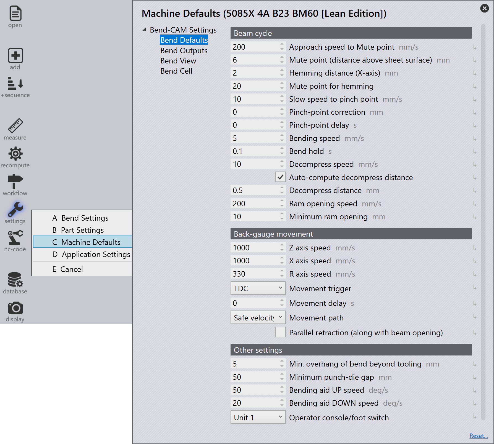

Machine defaults
Setelah part bend ditooling, Anda dapat mengakses opsi Machine Defaults dari menu Settings.
Sebagian besar parameter dalam Bend-CAM Settings, Bend Outputs, Bend View, dan Bend Cell mirip dengan Application Settings. Untuk penjelasan parameter ini, lihat bagian ui:38[Application Settings].
| Pengaturan yang tersedia dalam editor Machine Defaults tergantung pada tipe mesin dan konfigurasi yang dipilih. |
Pengaturan Bend Defaults memungkinkan Anda mengonfigurasi berbagai parameter yang terkait dengan proses penekukan, yang meliputi ui:5[Beam cycle], Back-gauge movement, dan Other settings.

Beam cycle
Approach speed to Mute point - Kecepatan beam hingga titik mute.
Mute point (distance above sheet surface) - Pada titik mute, kecepatan maksimum (Rapid down) secara otomatis beralih ke kecepatan yang dikurangi (Clamping).
Hemming distance (X-axis) - Jarak ini mengacu pada celah antara tepi hem dan permukaan alat. Ini disediakan untuk mencegah tepi hem menabrak alat hemming.
| Pengaturan ini hanya berlaku untuk mesin TruBendCell. |
Mute point for hemming - Jarak titik mute untuk alat hem.
Slow speed to pinch point - Kecepatan beam antara titik mute dan titik clamping.
Pinch-point correction - Nilai koreksi ditambahkan ke titik pinch standar.
Pinch-point delay - Waktu tunda yang diberikan untuk pinch-point sebelum penekukan dimulai.
Bending speed - Kecepatan beam selama penekukan.
Bend hold - Beam akan tetap di lower dead point selama durasi ini.
Decompress speed - Kecepatan beam sepanjang jalur dekompresi (decompression).
Auto-compute decompress distance - Secara otomatis menghitung jarak dekompresi berdasarkan sudut bend dan properti material.
Decompress distance - Dengan jalur dekompresi, ketegangan dalam rangka mesin dilepaskan dengan cara terkontrol setelah bend, karena berada di bawah ketegangan maksimum pada lower dead point (LDP). Jalur dekompresi menggerakkan beam ke atas dengan kecepatan lambat.
Minimum ram opening - Pembukaan beam adalah ukuran di mana
beam bergerak ke atas setelah operasi penekukan.
Nilai positif: Press beam diposisikan di atas titik mute.
Nilai negatif: Press beam diposisikan di bawah titik mute.
Back-gauge movement
Z axis speed - Kecepatan backgauge untuk gerakan sumbu Z.
X axis speed - Kecepatan backgauge untuk gerakan sumbu X.
R axis Speed - Kecepatan backgauge untuk gerakan sumbu R.
Movement trigger - Trigger untuk gerakan backgauge.
Movement delay - Tunda sebelum gerakan backgauge dimulai.
Movement path - Menentukan jalur yang diambil oleh gerakan backgauge.
Safe velocity: Backgauge bergerak di sekitar zona berbahaya dengan kecepatan yang diprogram (50 mm di belakang dan di atas alat). Backgauge akan bergerak maju dalam langkah akhir (sumbu X). Backgauge akan bergerak dengan kecepatan yang dikurangi ketika jarak antara gauge finger dan alat kurang dari 50 mm.
Safe path: Backgauge bergerak di sekitar zona berbahaya dengan kecepatan yang diprogram (50 mm di belakang dan di atas alat). Backgauge akan bergerak ke bawah dalam langkah akhir (sumbu R). Semua sumbu bergerak dengan kecepatan yang diprogram.
Parallel retraction (along with beam opening) - Backgauge mundur secara paralel dengan pembukaan beam.
Other settings
Min. overhang of bend beyond tooling - Panjang bend minimum melampaui tooling.
Minimum punch-die gap - Celah minimum antara punch dan die setelah pemasangan. Minimum punch-die gap adalah pengurangan dari tinggi terbuka (jarak antara rel punch dan rel die) dan tinggi die.
Bending aid UP speed - Kecepatan ke atas bending aid.
Bending aid DOWN speed - Kecepatan ke bawah bending aid.
Operator console/foot switch - Konsol operator atau foot switch yang digunakan untuk mengontrol bending aid. Operator dapat memilih antara satu atau kedua foot switch untuk mengoperasikan mesin.